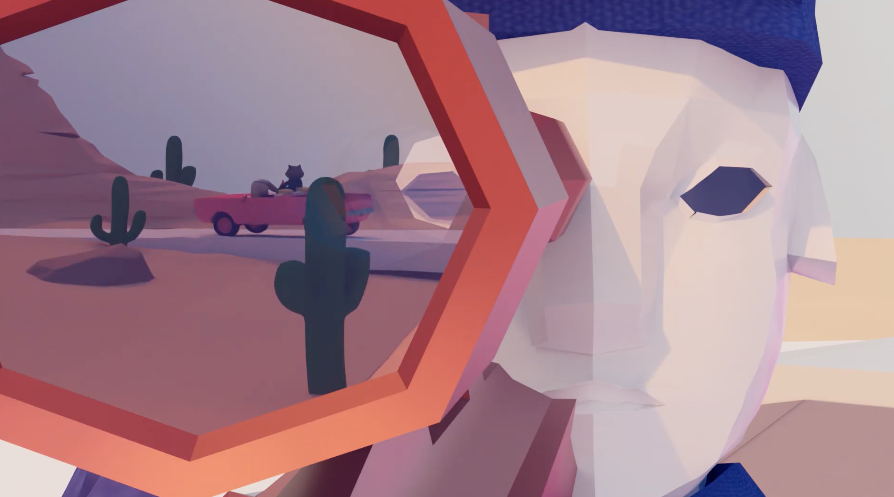

Character Production
Rigging and Surface Work
Rigging, skinning, manual weight painting, UVs, textures, materials, and limited blend shapes.
A 92-second wordless 3D animated short following a rabbit and raccoon criminal duo through a desert highway chase and roadside shootout.
Watch Animation ↗
The Heist is a wordless animated short developed as a group project. Set in a stylised desert environment, the film follows two animal criminals fleeing the police after a bank robbery, ending in a shootout at an abandoned roadside diner.
I handled much of the film’s 3D production, including character rigging, UV unwrapping, texturing, environment production, keyframe animation, camera work, lighting, and Arnold rendering. I also illustrated the storyboard and assembled an early rough cut.
Rigging, skinning, manual weight painting, UVs, textures, materials, and limited blend shapes.
Terrain, roads, vegetation, rocks, clouds, the bank, the diner, and scene layout.
Hand-keyed character animation, action staging, and camera work across the full sequence.
Lighting across the complete film and final rendering using Arnold
I drew the early concept sketches to explore the characters, props, vehicles, and desert locations before moving into storyboarding and timed shot planning.
I illustrated the storyboard and edited it into a timed video to establish shot order, framing, camera direction, pacing, and the transition from the highway chase to the diner sequence.
The full storyboard PDF records shot size, camera angle, camera movement, action, location, and approximate timing across the sequence.
TIMED STORYBOARD VIDEO
I modelled the final police character and completed UVs, textures, materials, rigging, skinning, manual weight painting, blend shapes, and animation across all three characters.
The rabbit and raccoon base models were created by another project contributor.
Model, UVs, textures, materials, rig, skinning, weighting, and animation by me.
UVs, textures, materials, rig, skinning, weighting, blend shapes, and animation by me.
UVs, textures, materials, rig, skinning, weighting, blend shapes, and animation by me.
I created the character joint hierarchies, applied constraints, bound the meshes, and manually adjusted skin weights. Limited blend shapes supported selected facial changes, while most of the performance was communicated through body poses.
Manual weighting was particularly time-consuming around shoulders, hips, knees, and the rabbit’s ears, where the meshes needed to hold up across exaggerated action poses.
The film was animated through hand-keyed poses and camera movement. I staged action across the desert highway and diner sequences, lit the complete film, and rendered the final sequence using Arnold.
Camera movement was repeatedly adjusted to keep the chase readable without making the action visually unstable. Lighting also required extensive testing of direction, intensity, colour temperature, and contrast so that the characters remained legible against the bright desert environment.
Final editing, sound design, and visual effects were completed by other team members.
The large shot count created uneven polish across the final film. In a future production, I would reduce the number of shots and reserve more time for animation timing, deformation cleanup, and continuity between cameras.
Manual weighting improved the main joint deformations, but some extreme poses still created intersections. I adjusted poses and camera placement to reduce visible clipping. A future rig would need more corrective blend shapes and earlier deformation testing.